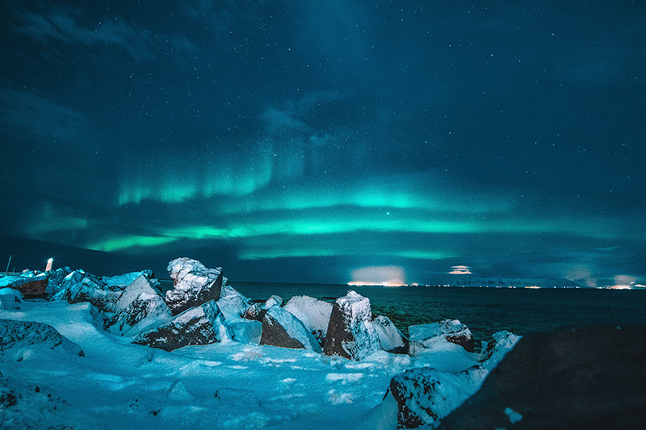
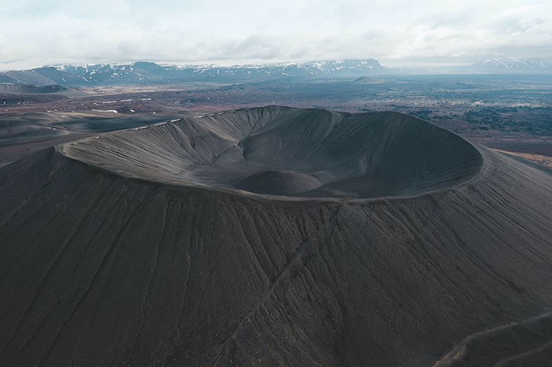
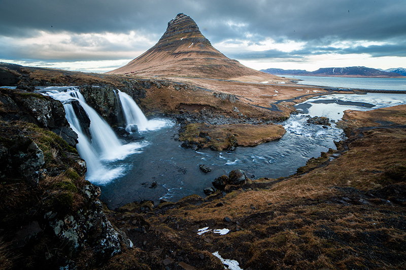
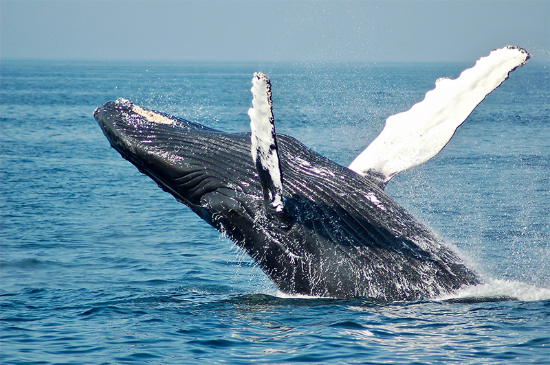
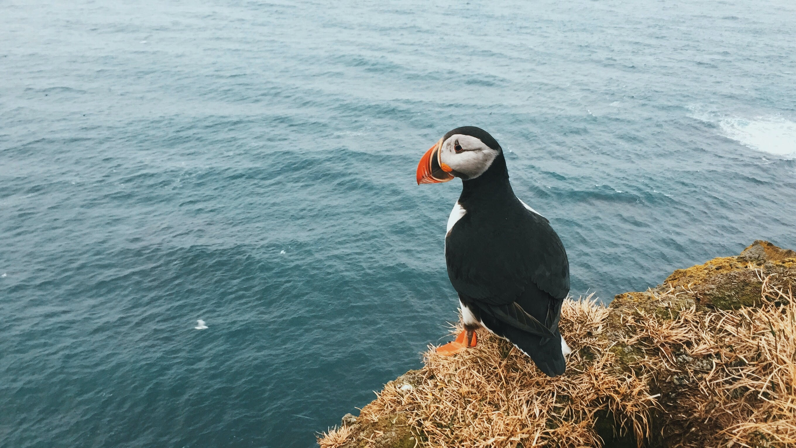
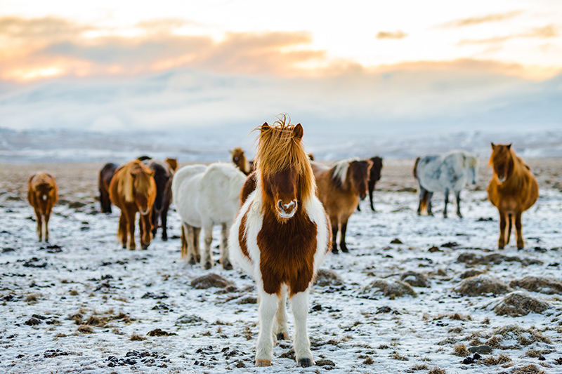

-

Northern Lights
The vast majority of travellers coming to Iceland throughout winter are likely to see the Northern Lights. February is one of the best times to marvel at the Northern Lights because of the reduced...
-

Volcanoes
Contemporary Icelandic painting is typically traced to the work of Þórarinn Þorláksson, who, following formal training in ...
-

Waterfalls
It has been said before that when it comes to water, Iceland has an abundance of it – in all forms. Be it in swimming pools, hot springs, geysers, lakes, glaciers, rivers or waterfalls, Iceland is...
-

whales
Over the last two decades, Iceland has become one of Europe's premier whale-watching destinations. Whale watching is as...
-

Birds
What are the most common birds in Iceland, and how are birds connected to Icelandic culture? What season is best for birdwatching in Iceland, and where are...
-

horses
What attributes make the Icelandic horse so loved by its people? How different are Icelandic horses from other...